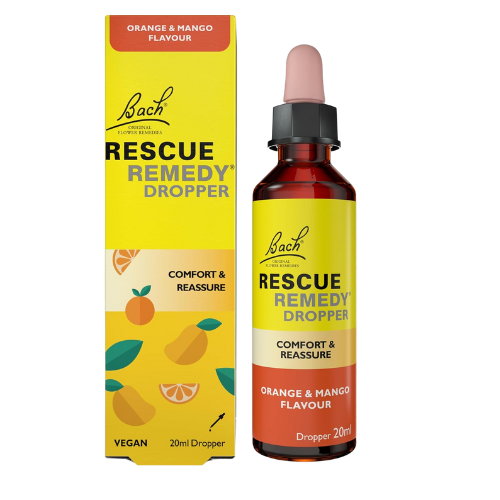
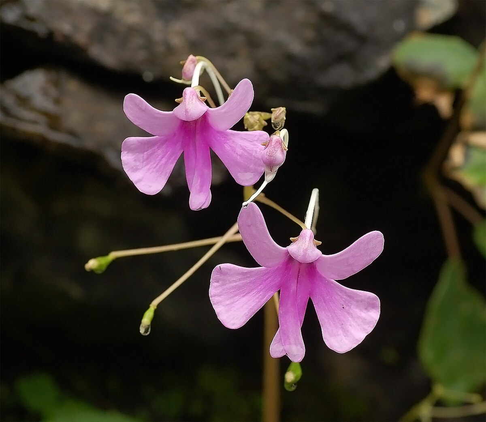
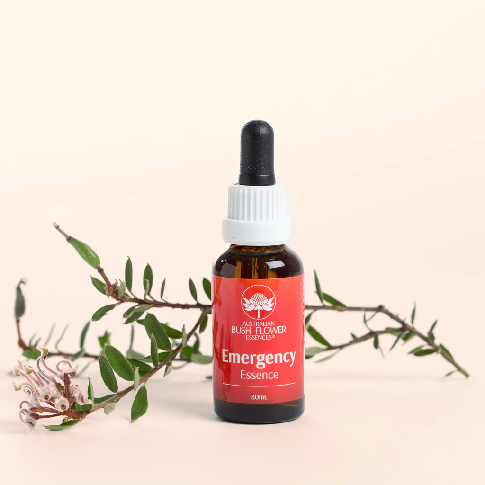

What are Flower Essences?
Flower essences are subtle liquid preparations infused with the energetic imprint of flowers. Unlike essential oils or herbal remedies, flower essences contain no physical plant material—they work on vibrational principles to address emotional and spiritual aspects of wellbeing rather than physical symptoms. Developed by Dr. Edward Bach in the 1930s, flower essence therapy has expanded worldwide with hundreds of essences now available from diverse ecosystems. These gentle remedies help balance negative emotional states, supporting inner harmony and personal transformation.
Benefits of Flower Essences
- Restore emotional balance during periods of stress or challenge
- Support personal growth and spiritual development
- Enhance meditation and mindfulness practices
- Address specific emotional patterns like fear, uncertainty, or discouragement
- Complement other healing modalities by addressing underlying emotional components
- Gentle enough for sensitive individuals, children, and animals
- Non-habit forming with no side effects or interactions with medications
Classic Bach Flower Remedies
-
 Rescue Remedy: A combination of five flower essences for emergency situations and acute stress.
-
Mimulus: Helps overcome known fears and everyday anxieties.
-
 Rock Rose: Addresses terror, panic, and extreme fear states.
Rock Rose: Addresses terror, panic, and extreme fear states.
-
 Impatiens: Brings patience and tolerance when feeling irritated.
-
 Larch: Builds confidence and addresses feelings of inadequacy.
Larch: Builds confidence and addresses feelings of inadequacy.
Beyond Bach: Modern Flower Essence Systems
-
 Australian Bush Flower Essences: Created from the unique flora of Australia to address contemporary emotional issues.
-
 FES Essences: Flower Essence Society's collection addressing a wide spectrum of emotional and spiritual states.
FES Essences: Flower Essence Society's collection addressing a wide spectrum of emotional and spiritual states.
-
 Alaskan Essences: Incorporates flowers, gems, and environmental essences from the pristine Alaskan wilderness.
Alaskan Essences: Incorporates flowers, gems, and environmental essences from the pristine Alaskan wilderness.
-
 Living Essences of Australia: Focuses on personal transformation and spiritual growth.
Living Essences of Australia: Focuses on personal transformation and spiritual growth.
How to Use Flower Essences
- Place 2-4 drops directly under the tongue 4 times daily for acute situations.
- Add 2-4 drops to water and sip throughout the day for ongoing support.
- Create a dosage bottle by adding 2-4 drops of each selected essence to a 30ml dropper bottle filled with spring water.
- Add to bath water for a relaxing, therapeutic soak.
- Apply topically by adding drops to creams or massage oils.
- Use consistently for 2-4 weeks for deeper emotional patterns.
- Trust your intuition when selecting essences or consult with a trained practitioner.
Selecting the Right Flower Essences
Choosing flower essences is both an art and a science. While reference books and practitioner guidance can be helpful, your intuitive connection with specific flowers often reveals which essences you need. Focus on your current emotional state rather than physical symptoms. Most practitioners recommend working with no more than 3-7 essences at once to address core emotional patterns. Essences may be selected based on present emotional challenges, recurring patterns, or to support specific life transitions and personal growth goals.
Safety and Considerations
Flower essences are among the safest natural remedies available. They contain only minute quantities of flower energy in a water-based solution preserved with brandy (alcohol-free versions are available). There are no known contraindications or interactions with medications, making them suitable for everyone from infants to the elderly. However, flower essences complement rather than replace appropriate medical or psychological care. For serious mental health conditions, always work with qualified healthcare providers while using flower essences as supportive therapy.